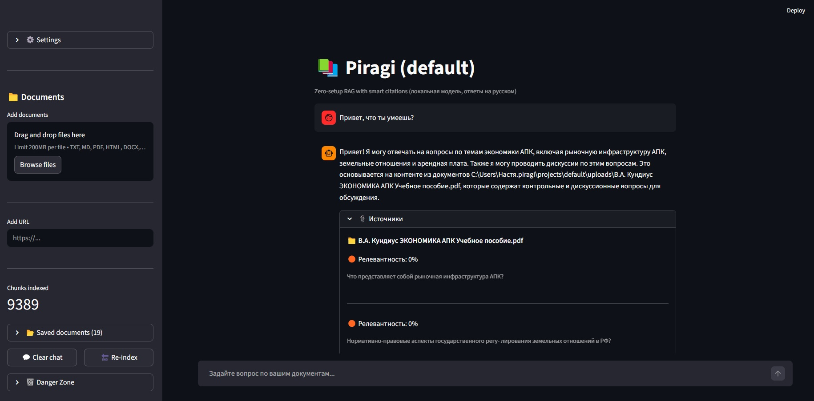

1. Зачем нужна оптимизация
RAG-система, которая работает в прототипе на ноутбуке с одним пользователем, и RAG-система, которая обслуживает тысячи пользователей в продакшне, — это две большие разницы. Пользователи ожидают ответа за 1-2 секунды. Если система тормозит, они уходят к конкурентам. Оптимизация производительности решает три задачи: снижение задержки (времени от запроса до ответа), увеличение пропускной способности (количества обрабатываемых запросов) и экономию ресурсов.
2. Где возникают задержки
В типичном RAG-пайплайне основные задержки возникают на этапе генерации языковой моделью — он занимает 80-90% времени ответа. Поиск в векторной базе данных обычно происходит быстро (миллисекунды). Реранжирование, если оно используется, может добавлять секунду и более. Сетевые задержки между компонентами тоже вносят свой вклад. Таким образом, оптимизацию стоит начинать с этапа генерации, а затем уже переходить к поиску и реранжированию.
3. Оптимизация поиска и генерации
Оптимизация поиска. На больших объёмах данных (миллионы векторов) поиск может замедляться. Для ускорения используются разные типы индексов: HNSW даёт лучший баланс скорости и точности, но требует больше памяти; IVF быстрее строить и экономичнее по памяти. Квантование векторов (PQ) позволяет сжать векторы в 4-8 раз, что ускоряет поиск и экономит память. Также помогает партиционирование данных — поиск только в нужной секции (например, по году или категории).
Оптимизация генерации. Это главный потребитель времени. Основные способы ускорения включают выбор маленькой и быстрой модели (Qwen2.5:1.5b вместо 7b, Llama 3 8B вместо 70B), квантование модели (4-битное или 8-битное ускоряет инференс в 2-4 раза), кэширование ответов на частые вопросы и потоковую генерацию (streaming), которая улучшает восприятие пользователя, хотя общее время не меняется.
4. Кэширование и асинхронность
Кэширование — самый эффективный способ ускорения, так как он полностью исключает выполнение дорогих операций. В RAG-системе можно кэшировать на нескольких уровнях: кэш эмбеддингов запросов для частых повторяющихся вопросов, кэш результатов поиска, чтобы не ходить в векторную базу, и кэш ответов языковой модели — самый эффективный уровень. Для семантического кэширования (когда вопросы похожи по смыслу, но не совпадают дословно) используются эмбеддинги и порог косинусного сходства. Redis — популярное решение для кэширования благодаря высокой скорости.
Асинхронность и параллелизм позволяют обслуживать много пользователей одновременно. Асинхронные запросы (asyncio в Python) не блокируют поток при ожидании ответа от модели. Параллельная обработка (например, одновременный запуск лексического и семантического поиска) сокращает общее время. Горизонтальное масштабирование (добавление серверов) и очереди задач (RabbitMQ, Kafka) используются при высоких нагрузках.
5. Что такое Streamlit и Ollama
После того как RAG-система готова, ей нужен интерфейс для взаимодействия с пользователями. Streamlit — это Python-библиотека для быстрого создания веб-интерфейсов для приложений машинного обучения. Она позволяет создавать чат-интерфейсы с историей диалога, загружать файлы через веб-интерфейс, отображать ответы в реальном времени и добавлять боковые панели для настроек. Streamlit преобразует Python-скрипты в интерактивные веб-приложения без необходимости писать HTML, CSS или JavaScript.

Ключевая особенность Streamlit — модель выполнения сверху вниз: скрипт перезапускается при каждом взаимодействии пользователя, а состояние сохраняется в st.session_state. Это делает разработку очень быстрой, но требует понимания особенностей работы с состоянием.
Ollama — это инструмент для запуска больших языковых моделей локально на вашем компьютере. Он предоставляет простой интерфейс командной строки для скачивания, запуска и взаимодействия с моделями, такими как Qwen2.5, Llama 3, Mistral и другие. Ollama скрывает сложности, связанные с управлением моделями, квантованием и оптимизацией инференса, позволяя разработчику сосредоточиться на логике приложения.
Основные преимущества Ollama для RAG-систем:
- Конфиденциальность — все данные остаются на вашем компьютере, не отправляются на сторонние серверы
- Бесплатное использование — нет платы за API-запросы, только затраты на железо
- Простота установки — достаточно скачать установщик с официального сайта и выполнить ollama pull qwen2.5
- Гибкость — можно выбирать разные модели под разные задачи (лёгкие для скорости, тяжёлые для качества)
- Поддержка русского языка — многие модели, включая Qwen2.5, хорошо понимают и генерируют русский текст
Ollama работает по принципу клиент-сервер. Сервер (ollama serve) запускается в фоновом режиме и обрабатывает запросы к моделям. Клиент (ваш Python-код) отправляет HTTP-запросы к серверу, обычно на порт 11434. Для запуска модели используется команда ollama run qwen2.5, а для скачивания — ollama pull qwen2.5. Модели сохраняются локально, и после первого скачивания работают без интернета.
В рамках нашего курса мы используем связку Streamlit (интерфейс) + ChromaDB (векторный поиск) + Ollama с моделью Qwen2.5 (генерация). Это полностью локальное, бесплатное и конфиденциальное решение, которое можно развернуть на обычном компьютере.
6. Основные компоненты Streamlit
Streamlit предоставляет простые и интуитивные компоненты для построения интерфейса. st.title() и st.header() создают заголовки. st.chat_message() и st.chat_input() — специальные компоненты для создания чат-интерфейсов, один для отображения сообщений, другой для поля ввода текста. st.sidebar позволяет добавлять элементы в боковую панель. st.session_state — это словарь для хранения состояния между перезагрузками страницы, критически важный для сохранения истории диалога, загруженных моделей и других данных, которые не должны теряться при обновлении. st.cache_resource — декоратор для кэширования ресурсоёмких операций (загрузка моделей, подключение к БД), чтобы они выполнялись только один раз.
7. Streamlit для RAG-приложений
Streamlit идеально подходит для создания RAG-чат-ботов благодаря встроенной поддержке чат-компонентов. Типичное RAG-приложение на Streamlit имеет следующую структуру:
- Загрузка моделей и подключение к векторной БД выполняется один раз (с помощью st.cache_resource)
- История сообщений хранится в st.session_state.messages
- Пользователь вводит вопрос в st.chat_input
- Система выполняет поиск и вызывает языковую модель
- Ответ отображается через st.chat_message с указанием источников в st.expander
- Боковая панель (st.sidebar) содержит настройки поиска и статистику
Важная особенность: все ресурсоёмкие операции (загрузка модели эмбеддингов, инициализация векторной БД, загрузка языковой модели) должны быть обёрнуты в st.cache_resource, иначе они будут выполняться при каждом взаимодействии пользователя, что сделает приложение неприемлемо медленным. Также рекомендуется использовать абсолютные пути к файлам базы данных, чтобы избежать проблем при запуске из разных директорий.

8. Оптимизация Streamlit-приложений
При разработке RAG-приложений на Streamlit важно учитывать несколько аспектов производительности. Во-первых, правильное использование st.cache_resource для загрузки моделей и подключений к базе данных — это самое важное, так как без кэширования каждое действие пользователя будет вызывать повторную загрузку моделей. Во-вторых, стриминг ответов (streaming) улучшает восприятие, позволяя пользователю видеть ответ по мере его генерации, а не ждать полного завершения.
В-третьих, ограничение количества отображаемых сообщений в истории помогает снизить использование памяти при длительных диалогах. В-четвёртых, эффективная работа с базами данных: поиск в Chroma должен быть оптимизирован (правильные индексы, фильтрация по метаданным). Наконец, при использовании API OpenAI или других облачных сервисов важно настроить таймауты и повторные попытки, чтобы приложение не зависало при временных сбоях.
Вопросы для самоконтроля
- Какие этапы RAG-пайплайна занимают больше всего времени и почему?
- Как кэширование помогает ускорить RAG-систему?
- Что такое Streamlit и для каких задач он используется?
- Какие компоненты Streamlit используются для создания чат-интерфейса?
- Зачем нужен st.session_state в Streamlit-приложениях?
- Что делает декоратор st.cache_resource и почему он важен для RAG-приложений?
- Как оптимизировать загрузку моделей в Streamlit?
- Почему важно показывать пользователю источники информации в RAG-чате?